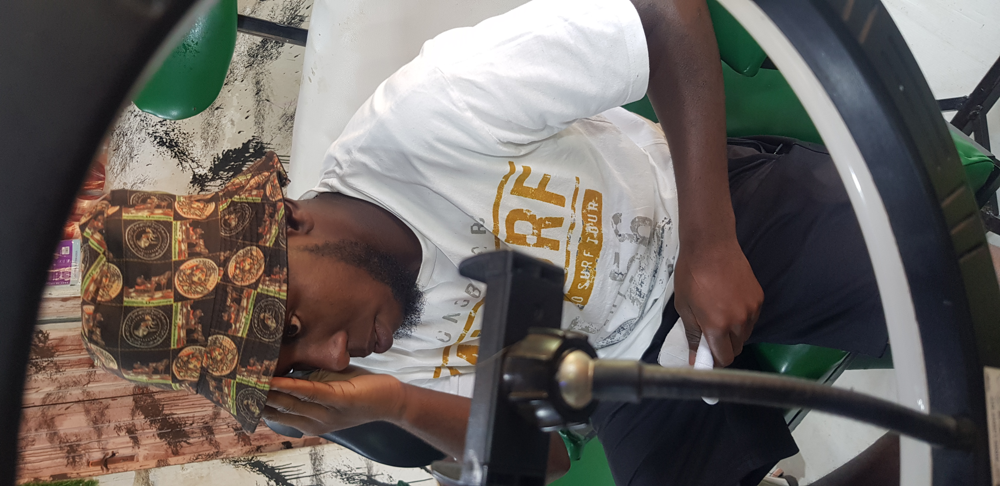

Gallery


Showcasing my journey, stories, and visual art in journalism.
Explore ArticlesI’m Dixon Cruz, a journalist who loves capturing stories through video, photography, and editing. As a student at Kampala International University, I’m always exploring new ways to bring ideas to life and connect with people through my work. I’m passionate about creating meaningful content that leaves a lasting impression and inspires others.
In recent years, the fashion industry has seen a significant shift toward sustainability, driven by increasing awareness of the environmental impact of fast fashion. With growing concerns over climate change, pollution, and ethical practices, many consumers and brands are turning to sustainable fashion practices as a means of addressing these issues. The Environmental Impact of Fast Fashion Fast fashion refers to the rapid production and consumption of inexpensive clothing, often designed to be worn only a few times before being discarded. This business model relies heavily on cheap labor and materials, resulting in large amounts of waste and pollution. According to the Ellen MacArthur Foundation, the fashion industry is responsible for 10% of global carbon emissions, more than international flights and shipping combined. What Is Sustainable Fashion? Sustainable fashion is an alternative that focuses on minimizing the environmental and social impact of clothing production. It promotes the use of eco-friendly materials such as organic cotton, recycled fabrics, and vegan leather. Brands that embrace sustainability often prioritize ethical labor practices, ensuring fair wages and safe working conditions for workers in the supply chain. Why Consumers Should Care For consumers, sustainable fashion offers the opportunity to make choices that align with their values. Buying less and choosing high-quality, durable items helps reduce the demand for mass-produced clothing. Furthermore, supporting brands with ethical practices encourages more companies to adopt sustainable practices, contributing to a larger systemic change in the fashion industry. The Future of Fashion As consumer demand for sustainable products continues to rise, more and more brands are responding with eco-conscious collections and improved transparency. Although challenges remain, such as the need for greater innovation in sustainable materials, the future of fashion is undeniably shifting toward a more sustainable and ethical industry. Read More
Artificial Intelligence (AI) has become an influential force in numerous industries, and healthcare is no exception. From diagnostics to treatment planning, AI is revolutionizing the way medical professionals work, offering more accurate, efficient, and personalized care for patients. AI in Diagnostics One of the most exciting applications of AI in healthcare is its ability to analyze medical images. Tools like deep learning algorithms can examine X-rays, MRIs, and CT scans with impressive accuracy. In fact, AI has been shown to detect early signs of diseases like cancer and heart conditions, sometimes even before symptoms arise. This early detection can significantly improve patient outcomes and increase survival rates. Personalized Treatment Plans AI has also made strides in developing personalized treatment strategies. By analyzing data from patient records, genetic information, and even lifestyle factors, AI systems can suggest tailored treatment plans that maximize the chances of success. This approach contrasts with the traditional "one-size-fits-all" model, ensuring more effective and individualized care for patients. Efficiency and Cost Reduction In addition to improving care quality, AI also contributes to making healthcare more efficient. AI-powered systems can handle administrative tasks such as scheduling, patient communication, and billing, freeing up healthcare providers to focus on direct patient care. This not only reduces overhead costs but also ensures a smoother experience for patients. The Future of AI in Healthcare Despite its remarkable potential, AI in healthcare still faces challenges, such as ethical concerns regarding data privacy and the need for human oversight. However, with continued advancements in technology and research, AI is poised to play an even greater role in shaping the future of healthcare. Read More
The COVID-19 pandemic dramatically shifted how we work, with millions of people around the world moving from traditional office settings to remote work environments. While this transition was initially born out of necessity, remote work has since become a permanent fixture in many industries, leading to both challenges and opportunities. The Advantages of Remote Work Remote work offers a variety of benefits to both employers and employees. For employees, the ability to work from home or other remote locations can improve work-life balance, save time and money on commuting, and provide a more flexible schedule. These advantages contribute to higher job satisfaction, which can ultimately boost productivity. For employers, remote work can lead to cost savings. With fewer employees in the office, companies can reduce overhead costs associated with maintaining physical office spaces. Moreover, the global talent pool becomes more accessible, allowing employers to recruit the best candidates regardless of location. Challenges in a Remote Work Environment Despite the many advantages, remote work comes with its own set of challenges. For employees, the lack of face-to-face interaction can lead to feelings of isolation and difficulties in building relationships with colleagues. Additionally, remote workers often struggle to separate their professional and personal lives, leading to burnout. Employers also face challenges in maintaining company culture and ensuring consistent communication among remote teams. It can be difficult to foster collaboration and innovation without in-person meetings and spontaneous interactions. To overcome these issues, many companies are investing in digital tools that enhance communication, project management, and team-building activities. The Future of Remote Work As remote work continues to evolve, many organizations are adopting hybrid models that combine in-person and remote work. This approach provides flexibility while still maintaining the benefits of in-office interactions. Experts predict that the future of work will be more fluid, with employees having greater autonomy in choosing where and how they work. Ultimately, the rise of remote work has fundamentally changed the workplace. It has led to a reevaluation of traditional work structures and a greater emphasis on flexibility and adaptability in the modern workforce. Read More
Get in touch via email at dixongreenleaf@gmail.com.
Follow me on social media: